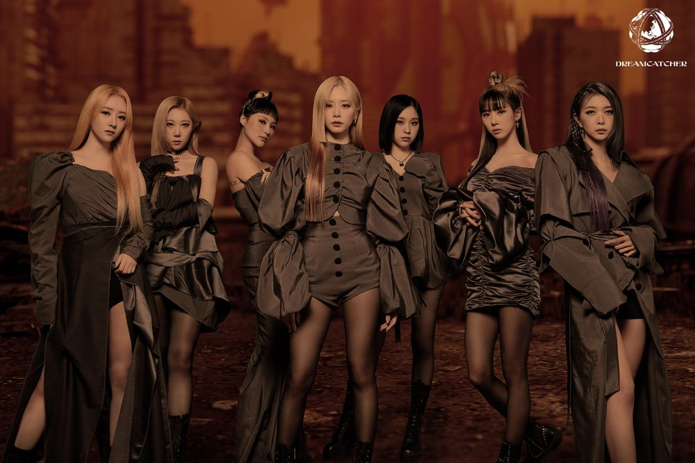
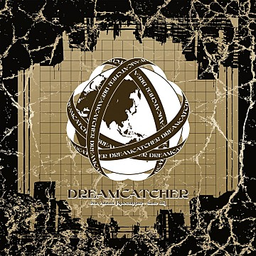

- NewJeans
- IVE
- Dreamcatcher
Dreamcatcher
Members 지유, 수아, 시연, 한동, 유현, 다미, 가현

드림캐쳐 컴퍼니 소속의 7인조 걸그룹으로, 2017년 1월 13일 데뷔했다.
그룹명의 의미는 ‘악몽을 잡아주는 꿈의 요정들’이다.
2014년 데뷔한 밍스의 기존 멤버 5명에 새 멤버 2명이 합류하여 개편하고 재데뷔하였다.
Dreamcatcher 2nd Album [Apocalypse : Save us]
2022.04.12

- Intro : Save us
- Locked Inside A Door
- MAISON
- Starlight
- Together
- 널 위해(Always)
- Skit : The seven doors
- Cherry (Real Miracle) (JI U SOLO)
- No Dot (SU A SOLO)
- 황홀경 (极夜) (SIYEON SOLO)
- 한겨울 (寒冬) (HANDONG SOLO)
- For (YOOHYEON SOLO)
- Beauty Full (DAMI SOLO)
- Playground (GAHYEON SOLO)